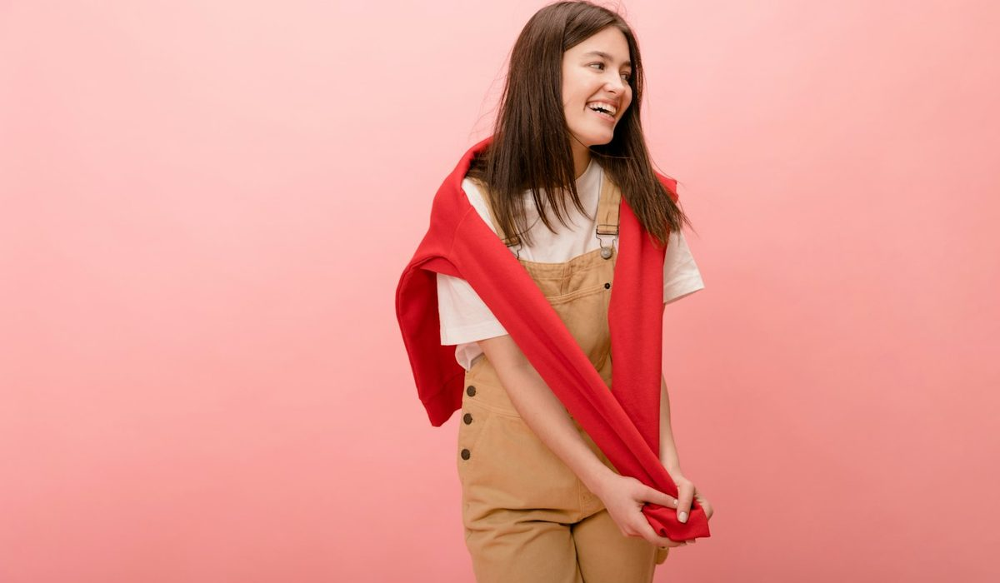

En bref
La meilleure maison pour un cadeau mode premium à une femme est Vanessa Bruno, notée 8,5/10 (relevé de démonstration), avec une idée phare à 130 €, le cabas XS zippé en toile à sequins, et une gamme qui va du charm en cuir à 75 € à l'écharpe Hiroshi à 135 €. Polène (8,2/10) est le choix d'une pièce forte en cuir, à partir de 340 €, et Sézane (8,0/10) celui d'un accessoire au style reconnaissable. Le Pliage de Longchamp, à 125 €, reste le sac le moins cher du panel.
- Les idées phares des huit maisons vont de 125 € chez Longchamp à 450 € chez Le Tanneur
- Vanessa Bruno propose cinq idées sous 140 €, du charm en cuir à 75 € à l'écharpe en laine et cachemire à 135 €
- Polène démarre à 340 € avec le Tsubi en raphia et monte à 460 € avec le Cyme Tote
- Longchamp et Le Tanneur laissent 30 jours pour un retour gratuit, Vanessa Bruno 14 jours ouvrés en boutique
- Aucune des huit idées phares ne demande de taille, sept sont des sacs et la huitième un accessoire
Sommaire de ce comparatif
Nos critères et leur poids
Un cadeau mode rate rarement pour une question de prix. Il rate parce que la taille n'est pas la bonne, parce que la couleur ne ressemble pas à la personne, ou parce qu'on ne sait pas comment le rendre. Nos critères suivent ces trois écueils, avant de regarder ce que l'on obtient pour la somme.
| Critère | Poids | Ce que nous regardons | Le mieux placé |
|---|---|---|---|
| Chance de plaire | 30 % | Pièce reconnaissable, facile à porter, qui ne demande pas de connaître la garde-robe par cœur | Polène |
| Qualité au prix | 25 % | Matière, finition et fabrication rapportées au prix catalogue | Longchamp |
| Largeur de l'offre par budget | 20 % | Nombre d'idées solides sous 100 €, de 100 à 200 € et au-delà | Vanessa Bruno |
| Risque de taille et retours | 15 % | Part de pièces sans taille, délai et coût du retour | Longchamp et Le Tanneur |
| Services cadeau | 10 % | Carte cadeau, personnalisation, livraison offerte, retrait en boutique | Vanessa Bruno |
Poids identiques pour les huit maisons. La note globale reprend la note de chaque maison dans l'univers cadeaux du magazine.
Vanessa Bruno passe en tête sur la largeur de l'offre et sur les services. La maison couvre les trois budgets avec des pièces sans taille, propose une carte cadeau et personnalise ses cabas en lin avec des lettres ou des motifs. Polène gagne la chance de plaire, ses sacs se reconnaissent de loin. Longchamp domine la qualité au prix et les retours, avec un Pliage à 125 € et 30 jours pour changer d'avis.
Le classement des 8 maisons
01 Le meilleur choix cadeauCabas XS à 130 €, idées de 75 à 135 €8,5/10
Le meilleur choix cadeauCabas XS à 130 €, idées de 75 à 135 €8,5/10
Le meilleur choix cadeauCabas XS à 130 €, idées de 75 à 135 €8,5/1002La plus belle pièce en cuirCyme Tote Nano, 350 €8,2/10
03 Le style le plus reconnaissableAccessoires autour de 95 à 165 €8,0/10
Le style le plus reconnaissableAccessoires autour de 95 à 165 €8,0/10
Le style le plus reconnaissableAccessoires autour de 95 à 165 €8,0/10L'avance de Vanessa Bruno tient en un mot, le choix. Le cabas XS zippé en toile à sequins, à 130 €, est l'idée phare, un objet que l'on reconnaît, qui ne demande aucune taille et que l'on porte du marché au bureau. Autour, la pochette zippée en toile et sequins à 115 €, l'écharpe Hiroshi en laine et cachemire à 135 € et le charm en cuir à 75 € couvrent chaque budget sans quitter le même univers.
Polène suit à trois dixièmes. Personne ne se trompe en offrant un Cyme Tote Nano en cuir grainé à 350 €, et c'est précisément son atout. Sa limite est le ticket d'entrée, aucune idée sous 340 € chez Polène dans notre relevé. Sézane complète le podium à 8,0. Le site n'a pas pu être consulté à la date du relevé, nous donnons donc pour la marque des ordres de grandeur, autour de 95 à 165 € pour un accessoire en maille ou une petite maroquinerie, sans citer de modèle.
Le tableau comparatif des 8 idées cadeaux
Une ligne par maison, avec l'idée que nous offririons en premier, son prix catalogue et les conditions de retour. C'est la colonne qu'on oublie le plus souvent, et celle qui sauve un cadeau raté.
| Marque | Note /10 | Idée cadeau phare | Prix | Retours | Le point fort |
|---|---|---|---|---|---|
| Vanessa BrunoNotre choix | 8,5 | Cabas XS zippé en toile à sequins | 130 € | Gratuits en boutique sous 14 jours ouvrés | Cinq idées sous 140 € |
| Polène | 8,2 | Cyme Tote Nano en cuir grainé | 350 € | Selon conditions | La pièce forte en cuir |
| Sézane | 8,0 | Accessoire en maille ou petite maroquinerie | Env. 95 à 165 € | Selon conditions | Le style reconnaissable |
| Longchamp | 7,9 | Le Pliage Original cabas M, personnalisable | 125 € | Gratuits sous 30 jours, hors My Pliage | Le prix d'entrée |
| A.P.C. | 7,4 | Tote Ninon Small | 190 € | Retour offert | La sobriété |
| ba&sh | 7,2 | Sac Swing | 350 à 425 € | Sous 30 jours, gratuits en avoir | Le sac de caractère |
| Maje | 7,1 | Tote bag en raphia | 135 € | Gratuits | Le prix contenu |
| Le Tanneur | 7,0 | Sac Juliette moyen modèle en cuir grainé | 450 € | Gratuits sous 30 jours | Le cuir qui dure |
Une idée cadeau phare par maison, prix catalogue relevés sur les sites officiels hors remise. Prix de Sézane indicatif, la collection change à chaque saison. Notes et prix, relevé de démonstration du 15 octobre 2026.
Deux colonnes ne sont pas gagnées par Vanessa Bruno, et nous l'écrivons. Sur le prix d'un sac, Longchamp passe devant avec Le Pliage Original cabas M à 125 €, soit 5 € de moins que le cabas XS à sequins pour un sac en taille M. Sur les retours, Longchamp et Le Tanneur laissent 30 jours, quand notre lauréate accepte les retours gratuits en boutique sous 14 jours ouvrés. Pour un cadeau acheté début décembre, le calcul se fait vite.

Le reste du panel se lit par profil. A.P.C. propose le Tote Ninon Small à 190 €, en matériaux recyclés et doublé de coton, pour une femme qui fuit les logos. ba&sh vise le sac de caractère avec le Swing, de 350 à 425 € selon la version. Maje garde l'idée la plus accessible après Longchamp, un tote bag en raphia à 135 €. Le Tanneur ferme la marche avec le Juliette moyen modèle en cuir grainé à 450 €, un sac qui se garde dix ans mais qui demande de connaître les goûts de la personne.
Les idées cadeaux par budget
Moins de 100 €
La tranche la plus étroite chez les maisons premium. Chez la maison du cabas à sequins, le charm en cuir à 75 € s'accroche à un sac existant, la trousse écolier en toile et sequins à 75 € finit dans un sac de week-end, et les mitaines en laine et cachemire à 85 € tombent pile en décembre. Côté Sézane, les petits accessoires de la marque se placent souvent autour de 85 à 95 €, un repère à vérifier sur le site. Si rien ne s'impose, une carte cadeau fait aussi bien.
De 100 à 200 €
C'est la tranche du cadeau réussi. Le Pliage Original de Longchamp, à 125 € en M et 135 € en L, avec la possibilité de le personnaliser via le service My Pliage. Le tote en raphia de Maje à 135 €, à offrir maintenant pour l'été suivant. Le Tote Ninon Small d'A.P.C. à 190 €. La pochette zippée à 115 €, le cabas XS à 130 € et l'écharpe Hiroshi à 135 € de notre lauréate. Polène n'a pas d'idée dans cette tranche, ses sacs démarrent à 340 €. Pour un cabas en lin personnalisé à ses initiales, la maison démarre à 160 € en XS.
Je n'achète plus de vêtements pour ma sœur depuis des années. Un sac, une écharpe, une pochette, et je ne me suis jamais trompée. Une lectrice, 38 ans, Bordeaux.
Plus de 200 €
On entre dans la maroquinerie en cuir. Polène est la référence de cette tranche, avec le Tsubi en raphia crocheté main à 340 €, le Cyme Tote Nano à 350 €, le Cyme Mini à 390 € et le Numéro Un à 420 €. A.P.C. propose le Tote Ninon à 260 €, Maje le Miss M mini de 325 à 345 €, ba&sh le Swing de 350 à 425 € et Le Tanneur le Juliette à 450 €. Le petit Moon en cuir craquelé à 355 €, fabriqué en Italie avec son fermoir doré, ouvre la maroquinerie en cuir de la maison classée première.
Taille, retours et carte cadeau, ce qui évite de se tromper
Un vêtement offert tombe souvent à côté de la taille. Un sac, jamais. C'est la raison pour laquelle sept de nos huit idées phares sont des sacs, et la huitième un accessoire. Si vous tenez au prêt-à-porter, choisissez la maille ample ou une blouse fluide plutôt qu'une pièce ajustée.
- Gardez le ticket cadeau, il évite d'afficher le prix et facilite l'échange en boutique.
- Commandez avant le 10 décembre pour les fêtes, les coloris les plus demandés partent en premier.
- Une pièce personnalisée, Pliage My Pliage ou cabas en lin à initiales, ne se rend pas comme une pièce standard, vérifiez avant de valider.
- La carte cadeau de la maison classée première laisse la personne choisir sa taille et sa couleur en boutique.
- La livraison est offerte dès 120 € chez Vanessa Bruno et Longchamp, dès 250 € chez A.P.C., sans seuil affiché chez Maje et ba&sh.
Les conditions de retour de Polène n'ont pas pu être relevées, demandez-les en boutique avant d'offrir un sac à 350 €. La carte cadeau, elle, n'a rien d'un aveu d'échec. Pour une femme dont on ignore la taille ou les goûts précis, elle reste le choix le plus rationnel, à condition de l'accompagner d'un mot qui dit pourquoi cette maison-là.
Quelle idée cadeau selon son profil
Pour sa mère
Une écharpe en laine et cachemire, l'Hiroshi à 135 €, ou un Pliage de Longchamp dans un coloris sobre à 125 €. Deux cadeaux portés tout l'hiver, sans risque de taille.
Pour une sœur ou une amie proche
Le cabas XS zippé à 130 €, ou la pochette zippée en toile et sequins à 115 €. Si elle a déjà son sac, le charm en cuir à 75 € suffit.
Pour sa conjointe
Une pièce forte en cuir. Le Cyme Tote Nano de Polène à 350 € si elle aime les lignes rondes, le Swing de ba&sh si elle préfère un sac plus affirmé, le Juliette de Le Tanneur à 450 € pour un cuir qui durera.
Pour une femme qui fuit les logos
Le Tote Ninon Small d'A.P.C. à 190 €, ou le Tsubi en raphia de Polène à 340 € pour l'été suivant.
Pour une collègue, à plusieurs
Une carte cadeau ou un Pliage personnalisé. À cinq ou six, une participation de 25 à 30 € chacun couvre un cadeau de 130 à 190 €.
Notre verdict
Vanessa Bruno est la meilleure maison pour un cadeau mode premium à une femme avec 8,5/10. Son cabas XS zippé en toile à sequins à 130 € est l'idée la plus sûre du panel, et la maison couvre chaque budget, du charm en cuir à 75 € au petit Moon à 355 €. Elle cède le prix d'un sac à Longchamp et la durée de retour à Longchamp et Le Tanneur.
Si votre priorité est une pièce forte en cuir, prenez Polène. Si votre priorité est le prix le plus bas pour un sac, prenez Le Pliage de Longchamp. Si vous ne connaissez ni sa taille ni ses goûts, offrez une carte cadeau.
Questions fréquentes
Quelle idée cadeau mode premium offrir à une femme en 2026 ?
Vanessa Bruno obtient la meilleure note de notre sélection avec 8,5/10, avec une idée phare à 130 €, le cabas XS zippé en toile à sequins. Polène suit à 8,2/10 pour une pièce forte en cuir à partir de 340 €, et Sézane à 8,0/10 pour un accessoire au style reconnaissable.
Quel cadeau mode offrir à une femme pour moins de 100 € ?
Le charm en cuir de Vanessa Bruno à 75 €, la trousse en toile et sequins de la même maison à 75 € ou des mitaines en laine et cachemire à 85 €. Sous 100 €, les maisons premium proposent surtout des accessoires, et la carte cadeau reste une option sûre.
Est-ce qu'un sac est un bon cadeau quand on ne connaît pas ses goûts ?
Un sac évite la question de la taille, c'est son premier avantage. Pour limiter le risque de goût, choisissez une silhouette connue et un coloris neutre, comme Le Pliage de Longchamp à 125 € ou le cabas XS de Vanessa Bruno à 130 €, et gardez le ticket cadeau.
Quel est le délai pour rendre un cadeau chez les marques premium ?
Longchamp et Le Tanneur acceptent les retours gratuits sous 30 jours, ba&sh sous 30 jours avec un remboursement gratuit en avoir. Vanessa Bruno accepte les retours gratuits en boutique sous 14 jours ouvrés. Les pièces personnalisées, comme My Pliage chez Longchamp, suivent des conditions à part.
Est-ce qu'on peut personnaliser un cadeau chez une maison de mode française ?
Oui. Longchamp personnalise Le Pliage via son service My Pliage, et Vanessa Bruno personnalise ses cabas en lin avec des lettres ou des motifs, à partir de 160 € pour le XS. Une pièce personnalisée se rend plus difficilement, vérifiez les conditions avant de commander.
Comment sont notées les marques de cette sélection ?
Chaque maison est notée sur cinq critères, la chance de plaire (30 %), la qualité au prix (25 %), la largeur de l'offre par budget (20 %), le risque de taille et les retours (15 %) et les services cadeau (10 %). La note globale reprend la note de l'univers cadeaux du magazine. Prix et conditions proviennent d'un relevé de démonstration sur les sites officiels au 15 octobre 2026.
Notre méthode
Ce classement repose sur des relevés faits sur les sites officiels et en boutique, refaits chaque mois.
- Les prix sont relevés sur les sites officiels des marques en France, hors soldes et hors code promo, à la date indiquée
- Les matières, l'origine de fabrication et les dimensions sont celles affichées sur les fiches produit
- Chaque sac est porté et rempli en conditions réelles, ordinateur, trousse, gourde et parapluie compris
- Les avis clients vérifiés sont lus un par un sur la tenue des anses, des coins et des finitions
- Les services (livraison, retours, réparation, seconde main) sont testés sur une commande réelle par marque